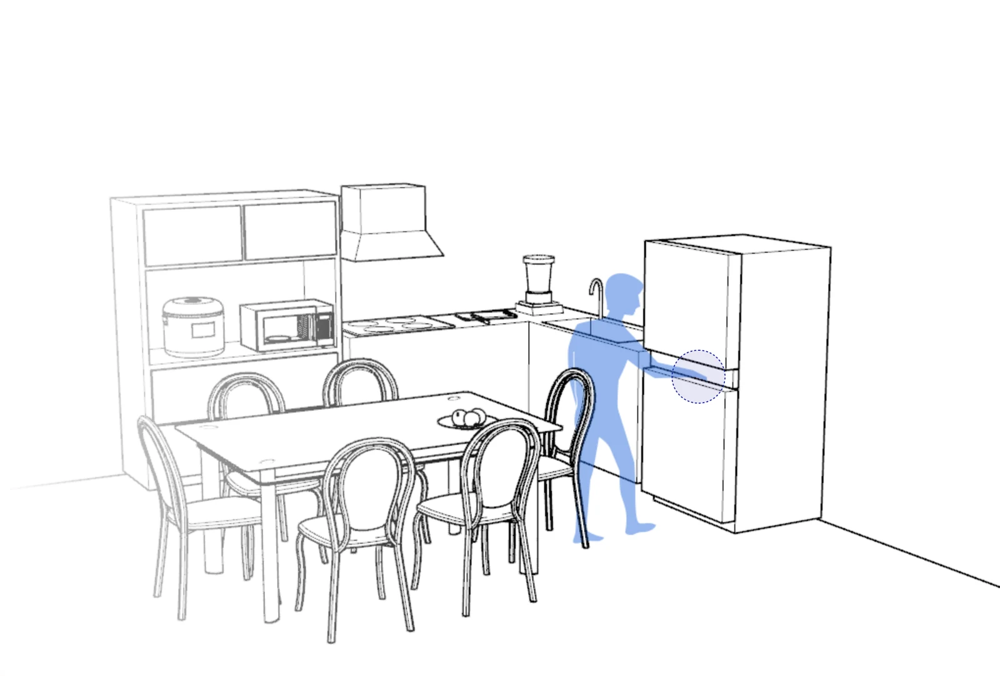
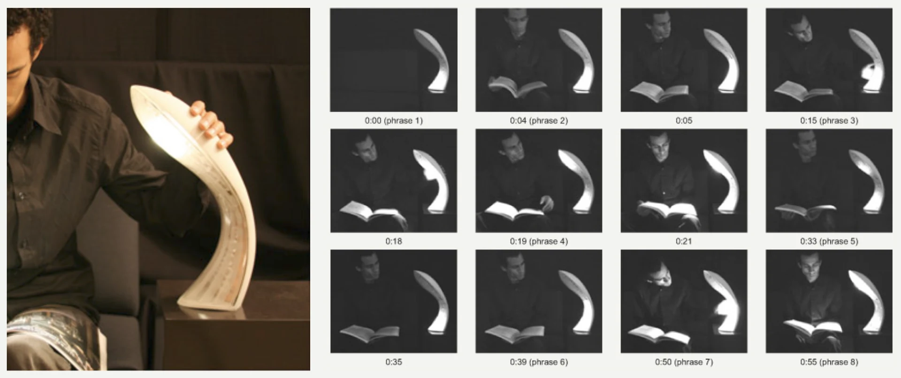
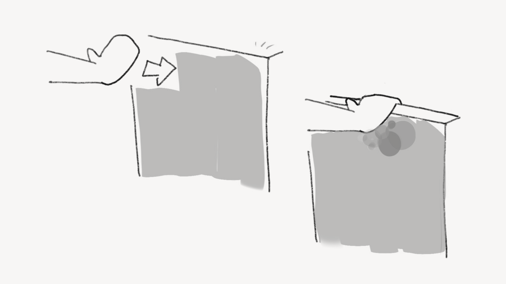
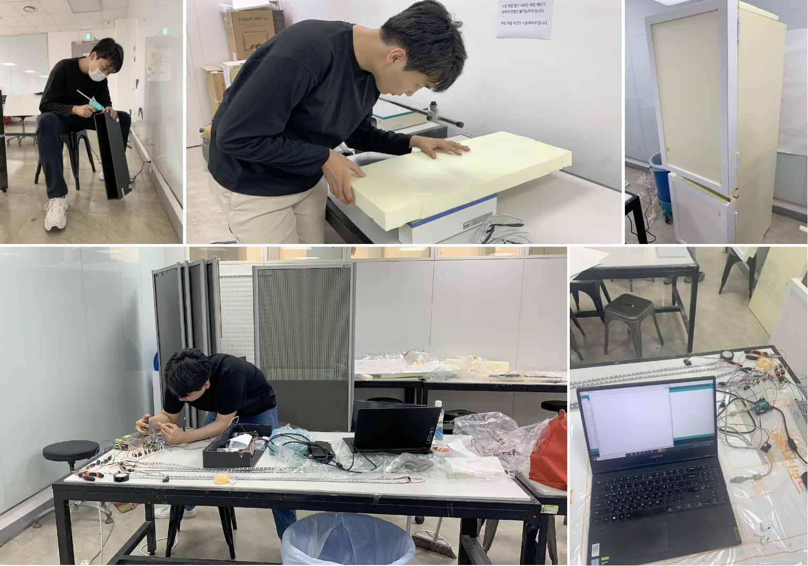

Physical Computing · 2020
Bianca
Bianca brings light into the familiar act of opening a refrigerator. A full-scale working prototype connects touch and movement with a visual response, exploring how an easily overlooked gesture might become a richer sensory experience.

01 / Motivation
Rediscovering
a familiar gesture
Opening a refrigerator is a familiar sequence of reaching, touching, and pulling.
The brief physical encounter within that routine—the contact of the hand, the resistance of the door, and the movement of opening it—is easily overlooked.
Could we enrich the encounter to make it more memorable?

02 / Desk Research
Aesthetics in the act of use
Ross and Wensveen describe aesthetics as something that unfolds through bodily action and product behavior. This perspective informed Bianca’s focus on the act of using a refrigerator: the reach, the contact, and the movement of opening. The design intent was to extend the sensory character of that familiar encounter through light.

Research precedent — The AEI lamp uses changing light behavior to invite a helping gesture from the user.
Ross, P. R., & Wensveen, S. A. G. (2010). Designing Behavior in Interaction: Using Aesthetic Experience as a Mechanism for Design. International Journal of Design, 4(2), 3–13.
03 / Implementation
Shaping the experience
through prototyping
I developed the Arduino code and electronics and co-built the full-scale prototype. Testing the sensing approach led us to refine when the interaction began and which light responses the final build could support.

Response before contact
The initial idea was for the door to begin glowing softly as someone reached toward it. A distance sensor would connect their approach to a gradual, low-intensity ambient glow.
Early experiments explored this response, but unreliable detection, malfunctions, and faulty sensor units led us to remove distance sensing and retain pressure input at the handle. This shifted the start of the experience from the approach to the moment of contact.

Building the response
The final prototype illuminated an area corresponding to where the handle was pressed. I adapted LED library examples and developed the Arduino code to produce the light responses, including automatic random pattern selection with each use.
We fabricated the body and doors, mounted the LEDs, and assembled the electronics. Bringing these parts together at full scale allowed us to demonstrate the connection between the handle action and the visible response.
04 / Design Outcome
A familiar action,
a changing response
The full-scale prototype brings light into the act of opening a refrigerator. Pressing different points on the handle illuminates corresponding areas of the door, while a light pattern is selected automatically at random with each use.
These responses were designed to make the brief encounter with the door more noticeable through touch, movement, and light. The film shows the working prototype in use.
05 / Reflection — Sep. 2026
Building Bianca made sensing reliability a concrete part of experience design. Removing distance sensing changed when the interaction could begin. This taught me to evaluate a sensing approach through the experience it could consistently support, including the timing of its response.
If I revisited Bianca, I would build on the perspective of aesthetics in use through further research and empirical user evaluation. By comparing experiences with and without light feedback over repeated use, I would examine whether the responses truly enrich the act of opening a refrigerator, while also identifying potential distraction or discomfort.